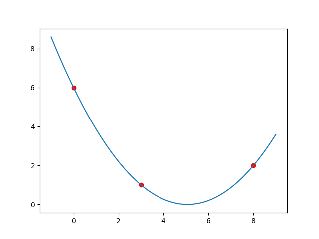

Copies and views of Numpy array
When manipulating arrays, their data may or may not be copied into a new array. Let’s look at different cases.
1x = np.arange(12)23# Just a new name, no data is copied4y = x56print(x) # [ 0 1 2 3 4 5 6 7 8 9 10 11]7print(y) # [ 0 1 2 3 4 5 6 7 8 9 10 11]8print(x is y) # True, as they are same objects
When we index or slice a numpy array, the resulting array shares same data i.e. the result array is a view for the original array.
1x = np.arange(1, 13).reshape((3, 4))2print(x)3# [[ 1 2 3 4]4# [ 5 6 7 8]5# [ 9 10 11 12]]67y = x[:, 1:3] # x and y share same data8print(y)9# [[ 2 3]10# [ 6 7]11# [10 11]]1213y[0, 0] = 123 # Changing the shared data14print(x)15# [[ 1 123 3 4]16# [ 5 6 7 8]17# [ 9 10 11 12]]1819print(y)20# [[123 3]21# [ 6 7]22# [ 10 11]]
copy() method of a numpy array can be used to create a new array which does not share data with the original array.
1x = np.arange(1, 13).reshape((3, 4))2print(x)3# [[ 1 2 3 4]4# [ 5 6 7 8]5# [ 9 10 11 12]]67y = x[:, 1:3].copy()8print(y)9# [[ 2 3]10# [ 6 7]11# [10 11]]1213y[0, 0] = 123 # Changes the copy only14print(y)15# [[123 3]16# [ 6 7]17# [ 10 11]]1819print(x)20# [[ 1 2 3 4]21# [ 5 6 7 8]22# [ 9 10 11 12]]
Polynomial Interpolation using SciPy
We can use lagrange function from scipy.interpolate module to obtain Lagrange polynomial that interpolates given data points.
1import numpy as np2from scipy.interpolate import lagrange34xdata = np.array([0, 1, 2])5ydata = np.array([0, 1, 8])67poly = lagrange(xdata, ydata)8print(poly) # Display polynomial9# 210# 3 x - 2 x1112print(poly.order) # 2, degree of polynomial1314# Coefficients of terms x^0, x^1, x^215print("Coefficients: ", poly[0], poly[1], poly[2])16# Coefficients: 0.0 -2.0 3.01718# evaluate polynomial at x19x = 1020print(poly[0] + poly[1] * x + poly[2] * x ** 2) # 280.02122# we can also evaluate by simply calling the poly object as a function23print(poly(10)) # 280.0
Questions
Find the polynomial interpolation for the data points . Verify the expected result by plotting the data points and interpolation function.
Expected plot:
1import numpy as np2import matplotlib.pyplot as plt3from scipy.interpolate import lagrange45xdata = np.array([0, 3, 8])6ydata = np.array([6, 1, 2])
Find and plot interpolation polynomial for data points with , and random integers sampled from as y-values.
Linear Regression using SciPy
-
Real-life data is usually very noisy and interpolation is not the best tool to fit a curve to data.
-
Instead we would want to use a polynomial with smaller degree (e.g. a line) and fit it as best we can without interpolating the points.
-
Let’s do an example with some random data. We build a set of random points based on the model for and .
- Here term represents some random noise which we model using the normal distribution.
- We can generate random numbers sampled from the standard normal distribution using the NumPy function numpy.random.randn.
1import numpy as np2import matplotlib.pyplot as plt3from scipy.stats import linregress45a0, a1 = 2, 36N = 100 # number of points to sample78xdata = np.random.rand(N) # N numbers in [0, 1)9noise = 0.1 * np.random.randn(N) # small random noise10ydata = a0 + a1*xdata + noise1112line = linregress(xdata, ydata)13x = np.linspace(0,1,10)14y = line.slope * x + line.intercept1516plt.scatter(xdata, ydata)17plt.plot(x, y,'r')18plt.show()
Questions
Let’s work with some real data. A famous Basketball player played from 2006 to 2016.
We are given the total games played per year and points per game for these years:
1years = np.array([2006, 2007, 2008, 2009, 2010, 2011, 2012, 2013, 2015, 2016])2games_per_year = np.array([80, 77, 82, 82, 73, 82, 58, 78, 35, 66])3points_per_game = np.array([35.4, 31.6, 28.3, 26.8, 27, 25.3, 27.9, 27.3, 22.3, 17.6])
Compute the linear model for points_per_game vs years and plot data points as well as the regression lines.
For the years 2006 to 2016 the player had 33643 total points. Which year in future he would have passed the record 38387 points?
- Suppose future_years are:
- Use the regression line computer in question above to compute future_points_per_game using future_years.
- Compute future_points_per_year using average games_per_year
- Compute total points (cumulative sum of points) until each future year.
- Find for which year total points > .